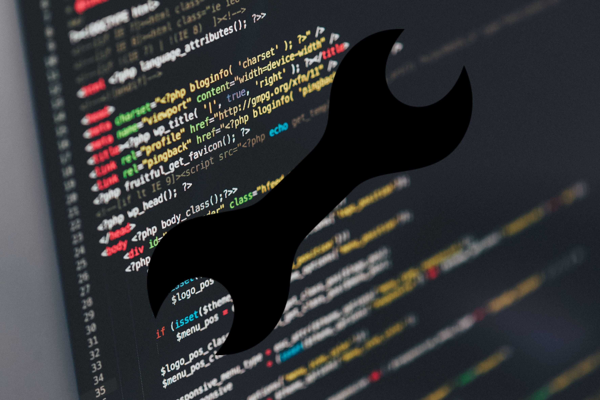

Onderhoud website

Het beheren van een moderne website vereist voortdurende aandacht en zorg om ervoor te zorgen dat deze
optimaal presteert en aansluit bij de veranderende behoeften van uw publiek. Als bedrijfseigenaar
begrijpt u waarschijnlijk dat een website meer is dan alleen een online visitekaartje; het is een
dynamisch platform dat uw merk vertegenwoordigt, informatie deelt en interacties faciliteert.
Met de constante ontwikkelingen in technologie, ontwerp en beveiliging is het essentieel om uw website
up-to-date te houden. Regelmatige aanpassingen en onderhoudsbeurten zijn nodig om ervoor te zorgen dat
uw site vlot blijft werken, ongeacht het apparaat of de browser die uw bezoekers gebruiken. Dit geldt
ook voor het waarborgen van de snelheid en responsiviteit van uw site, wat van invloed kan zijn op de
gebruikerservaring en de positie in zoekmachines.
Onze toegewijde experts begrijpen de complexiteit van websitebeheer en onderhoud. Of het nu gaat om het
bijwerken van inhoud, het implementeren van nieuwe functies, het oplossen van technische problemen of
het regelmatig controleren van beveiligingsupdates, we zijn hier om u te ondersteunen. Door de zorg voor
uw website aan ons over te laten, kunt u zich concentreren op uw kernactiviteiten, wetende dat uw online
aanwezigheid in bekwame handen is.
Laten we samenwerken om een op maat gemaakt plan te creëren voor het regelmatig aanpassen en onderhouden
van uw website. Op deze manier kunt u er zeker van zijn dat uw digitale platform niet alleen functioneel
blijft, maar ook een effectief instrument wordt om uw doelen te bereiken. Uw website is een reflectie
van uw bedrijf, en we zijn hier om ervoor te zorgen dat het altijd in zijn beste vorm is.